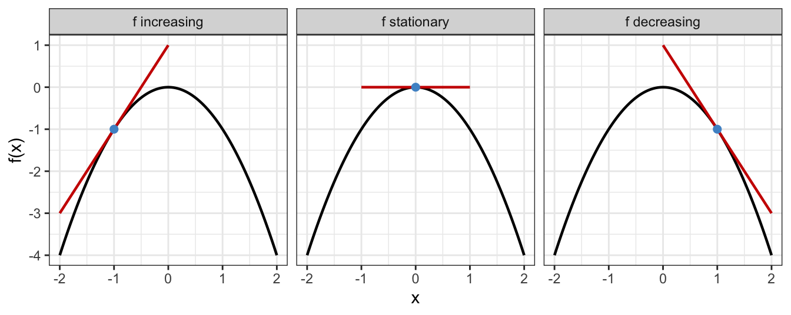
Calculus: Differentiation and Its Application
A statistical perspective
Dr. Haziq Jamil ![]()
Assistant Professor in Statistics, Universiti Brunei Darussalam
June 14, 2025
(Almost) Everything you ought to know…
…about calculus in the first year
Let \(f:\mathcal X \to \mathbb R\) be a real-valued function defined on an input set \(\mathcal X\).
Definition 1 (Differentiability) \(f(x)\) is said to be differentiable at a point \(x \in \mathcal X\) if the limit
\[ L = \lim_{h \to 0} \frac{f(x + h) - f(x)}{h} \tag{1}\] exists. If \(L\) exists, we denote it by \(f'(x)\) or \(\frac{df}{dx}(x)\), and call it the derivative of \(f\) at \(x\). Further, \(f\) is said to be differentiable on \(\mathcal X\) if it is differentiable at every point in \(\mathcal X\).
For now, we assume \(\mathcal X \subseteq \mathbb R\), and will extend to higher dimensions later.
Some examples
| Function | Derivative |
|---|---|
| \(f(x) = x^2\) | \(f'(x) = 2x\) |
| \(f(x) = \sum_{n} a_n x^n\) | \(f'(x) = \sum_{n} n a_n x^{n-1}\) |
| \(f(x) = \sin(x)\) | \(f'(x) = \cos(x)\) |
| \(f(x) = \cos(x)\) | \(f'(x) = -\sin(x)\) |
| \(f(x) = e^x\) | \(f'(x) = e^x\) |
| \(f(x) = \ln(x)\) | \(f'(x) = \frac{1}{x}\) |
We can derive it “by hand” using the definition. Let \(f(x) = x^2\). Then,
\[ \begin{align} \lim_{h \to 0} & \frac{f(x + h) - f(x)}{h} \\ &= \lim_{h \to 0} \frac{(x + h)^2 - x^2}{h} \\ &= \lim_{h \to 0} \frac{x^2 + 2xh + h^2 - x^2}{h} \\[0.5em] &= \lim_{h \to 0} 2x + h \\[0.5em] &= 2x. \end{align} \]
Graphically…
But what is a derivative?
The derivative of a function tells you:
- üöÄ How fast the function is changing at any point
- üìê The slope of the tangent line at that point
The concept of optimisation
- When \(f\) is some kind of a “reward” function, then the value of \(x\) that maximises \(f\) is highly of interest. Some examples:
- üí∞ Profit maximisation: Find the price that maximises profit.
- üߨ Biological processes: Find the conditions that maximise growth or reproduction rates.
- üë∑‚Äç‚ôÇÔ∏è Engineering: Find the design parameters that maximise strength or efficiency.
- Derivatives help us find so-called critical values: Solve \(f'(x) = 0\).
Example 1 Find the maximum of \(f(x) = -3x^4 + 4x^3 + 12x^2\).
\[ \begin{align*} f'(x) = -12x^3 + 12x^2 + 24x &= 0 \\ \Leftrightarrow 12x(2 + x - x^2) &= 0 \\ \Leftrightarrow 12x(x+1)(x-2) &= 0 \\ \Leftrightarrow x &= 0, -1, 2. \end{align*} \]
Are all of these critical values maxima values? ü§î
Graphically…

How do we know if it’s a maxima or minima?
Second derivative test: Measure the change in slope around a point \(x\), i.e. \(f''(\hat x) = \frac{d}{dx}\left( \frac{df}{dx}(x) \right) = \frac{d^2f}{dx^2}(x)\).
| Behaviour of \(f\) near \(\hat x\) | \(f''(\hat x)\) | Shape | Conclusion | |
|---|---|---|---|---|
| Increasing → Decreasing | \(f''(\hat x) < 0\) | Concave (∩) | Local maximum | |
| Decreasing → Increasing | \(f''(\hat x) > 0\) | Convex (∪) | Local minimum | |
| No sign change / flat region | \(f''(\hat x) = 0\) | Unknown / flat | Inconclusive |
Second derivative test
From Example 1, the second derivative is given by \[ \begin{align*} f''(x) &= \frac{d}{dx}\left(-12x^3 + 12x^2 +24x\right) \\ &= -36x^2 + 24x + 24 \end{align*} \]
Plug in the critical points:
- \(x=-1\): \(f''(-1) = -36 - 24 + 24 = -36 < 0\), hence local maximum.
- \(x=0\): \(f''(0) = 0 + 0 + 24 = 24 > 0\), hence local minimum.
- \(x=2\): \(f''(2) = -144 + 48 + 24 = -72 < 0\), hence local maximum.
Tip
Often it is not enough to just differentiate once to find optima. Differentiate twice to classify critical points.
Curvature
Let \(\mathcal C_x\) denote the osculating circle at \(x\) with centre \(c\) and radius \(r\), i.e. the circle that best approximates the graph of \(f\) at \(x\). Historically, the curvature \(\kappa\) for a graph of a function \(f\) at a point \(x\) is measured as \(\kappa = \frac{1}{r}\).

Curvature and concavity
Definition 2 (Curvature) The (signed) curvature for a graph \(y=f(x)\) is \[ \kappa = \frac{f''(x)}{\big(1 + [f'(x)]^2\big)^{3/2}}. \]
The second derivative \(f''(x)\) tells us how fast the slope is changing.
The sign of the curvature is the same as the sign of \(f''(x)\). Hence,
- If \(f''(x) > 0\), the graph is concave up (convex).
- If \(f''(x) < 0\), the graph is concave down (concave).
The magnitude of the curvature is proportional to \(f''(x)\). Hence,
- If \(|f''(x)|\) is large, the graph is steep and “curvier”.
- If \(|f''(x)|\) is small, the graph is flat and “gentle”.
For reference, a straight line has zero curvature.
Summary so far
Derivatives represent rate of change (slope) of a function \(f:\mathcal X \to \mathbb R\).
Interested in optimising an objective function \(f(x)\) representing some kind of “reward” or “cost”.
Find critical points by solving \(f'(x) = 0\).
Use the second derivative test to classify critical points:
- If \(f''(x) < 0\), then \(f\) is concave down at \(x\) and \(x\) is a local maximum.
- If \(f''(x) > 0\), then \(f\) is concave up at \(x\) and \(x\) is a local minimum.
- If \(f''(x) = 0\), then the test is inconclusive.
Curvature tells us how steep the curve is at its optima. In some sense, it tells us how hard or easy it is to find the optimum.
A statistical perspective
But what is statistics?
Statistics is a scientific subject that deals with the collection, analysis, interpretation, and presentation of data.
Collection means designing experiments, questionnaires, sampling schemes, and also administration of data collection.
Analysis means mathematically modelling, estimation, testing, forecasting.
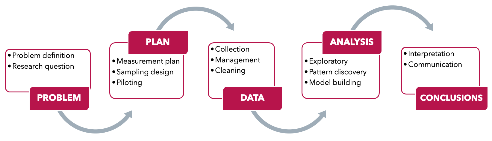
Motivation
I toss a coin \(n\) times and I wish to find \(p\), the probability of heads. Let \(X_i=1\) if a heads turns up, and \(X_i=0\) if tails.
I do not know the value of \(p\), so I want to estimate it somehow.
I have a “guess” what it might be e.g. \(p=0.5\) or \(p=0.7\).
How do I objectively decide which value is better?
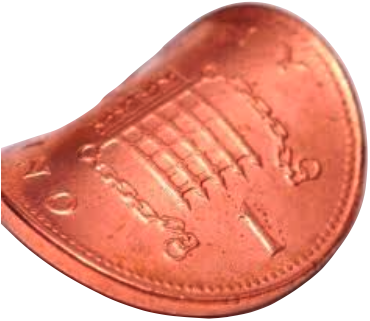
A more high-stakes example
Think of the binary outcomes as a stock price rising or falling. You’ll need to decide to invest based on what you believe (or the data suggests) the probability of the stock price rising is.
A probabilistic model
Each \(X_i\) is a random variable taking only two possible outcomes, i.e. \[ X_i = \begin{cases} 1 &\text{w.p. } \ \ p \\ 0 &\text{w.p. } \ \ 1-p \\ \end{cases} \] This is known as a Bernoulli random variable.
Suppose that \(X=X_1 + \dots + X_n\). So we are counting the number of heads in \(n\) tossess. Then this becomes a binomial random variable. We write \(X \sim \operatorname{Bin}(n, p)\), and the probability mass function is given by \[ f(x \mid p) = \Pr(X = x) = \binom{n}{x} p^x (1 - p)^{n - x}, \quad x = 0, 1, \ldots, n. \]
Often we might want to find quantities such as \(\operatorname{E}(X)=np\) and \(\operatorname{Var}(X)=np(1-p)\), but we will not go into details here.
Learning from data
\(p\) is unknown
If we do not know \(p\), then it is not possible to calculate probabilities, expectations, variances… ☹️
Naturally, you go ahead and collect data by tossing it \(n=10\) times. The outcome happens to be \[ H, H, H, T, T, H, H, T, H, H \] There is a total of \(X=7\) heads, and from this you surmise that (at least) the coin is unlikely to be fair, because:
- If \(p=0.5\), then \(\Pr(X=7 \mid p = 0.7) = \binom{10}{7} (0.5)^7 (0.5)^3 = 0.117\).
- If \(p=0.7\), then \(\Pr(X=7 \mid p = 0.5) = \binom{10}{7} (0.7)^7 (0.3)^3 = 0.267\).
- If \(p=0.9\), then \(\Pr(X=7 \mid p = 0.9) = \binom{10}{7} (0.9)^7 (0.1)^3 = 0.057\).
How to formalise this idea?
The likelihood function
Definition 3 Given a probability function \(x \mapsto f(x\mid\theta)\) where \(x\) is a realisation of a random variable \(X\), the likelihood function is \(\theta \mapsto f(x\mid\theta)\), often written \(\mathcal L(\theta) = f(x \mid \theta)\).
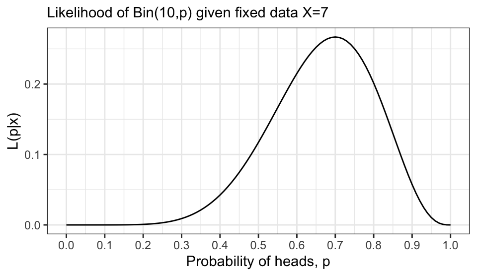
The value \(\hat \theta\) which maximises \(\mathcal L(\theta)\) is called the maximum likelihood estimator (MLE) of \(\theta\).
Parameteric statistical models
Assume that \(X_i \sim f(x \mid \theta)\) independently for \(i = 1, \ldots, n\). Here, functional form of \(f\) is known, but the parameter \(\theta\) is unknown. Examples:
| Name | \(f(x \mid \theta)\) | \(\theta\) | Remarks |
|---|---|---|---|
| Binomial | \(\binom{n}{x} p^x (1 - p)^{n - x}\) | \(p \in (0, 1)\) | No. successes in \(n\) trials |
| Poisson | \(\frac{\lambda^x e^{-\lambda}}{x!}\) | \(\lambda > 0\) | Count data |
| Uniform | \(\frac{1}{b - a}\) for \(x \in [a, b]\) | \(a < b\) | Equally likely outcomes |
| Exponential | \(\lambda e^{-\lambda x}\) for \(x \geq 0\) | \(\lambda > 0\) | Waiting time |
| Normal | \(\frac{1}{\sqrt{2\pi\sigma^2}} \exp\left(-\frac{(x - \mu)^2}{2\sigma^2}\right)\) | \(\mu \in \mathbb{R},\ \sigma^2 > 0\) | Bell curve |
Example (Normal mean)
Suppose we observe \(X_1, \ldots, X_n\) from a normal distribution with unknown mean \(\mu\) and known variance \(\sigma^2\). The log-likelihood function is given by
\[ \begin{align*} \ell(\mu) &= \sum_{i=1}^n \log f(X_i \mid \mu) \\ &= \sum_{i=1}^n \log \left( \frac{1}{\sqrt{2\pi\sigma^2}} e^{-\frac{(X_i - \mu)^2}{2\sigma^2}} \right) \\ &= \sum_{i=1}^n \left\{ -\frac{1}{2} \log(2\pi\sigma^2) - \frac{(X_i - \mu)^2}{2\sigma^2} \right\} \\ &= -\frac{n}{2} \log(2\pi\sigma^2) - \frac{1}{2\sigma^2} \sum_{i=1}^n (X_i - \mu)^2. \end{align*} \]
Example (Normal mean, cont.)
To find the MLE of \(\mu\), we differentiate the log-likelihood function with respect to \(\mu\) and set it to zero:
\[ \begin{align*} \frac{d}{d\mu} \ell(\mu) &= -\frac{1}{2\sigma^2} \cdot 2 \sum_{i=1}^n (X_i - \mu)(-1) \\ &= \frac{1}{\sigma^2} \sum_{i=1}^n (X_i - \mu) = 0 \\ &\Leftrightarrow \sum_{i=1}^n X_i - n\mu = 0 \Leftrightarrow \mu = \frac{1}{n} \sum_{i=1}^n X_i. \end{align*} \]
Thus, the MLE for \(\mu\) is \(\hat\mu = \bar X = \frac{1}{n} \sum_{i=1}^n X_i\).
A real data example
Example 2 Sample \(n=50\) house prices randomly in Brunei.

But wait, the sample was random…
209 290 188 432 305 190 321 346 330 241 423 ...\(\bar X = 282.0\)
312 211 306 159 415 470 235 168 329 258 512 ...\(\bar X = 283.7\)
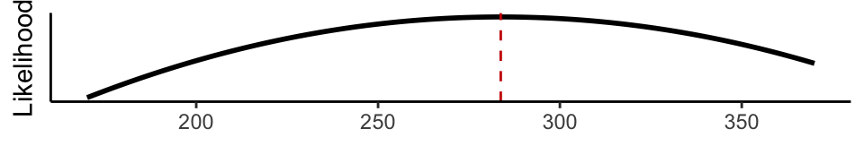
210 276 181 288 207 449 344 363 310 440 208 ...\(\bar X = 256.8\)
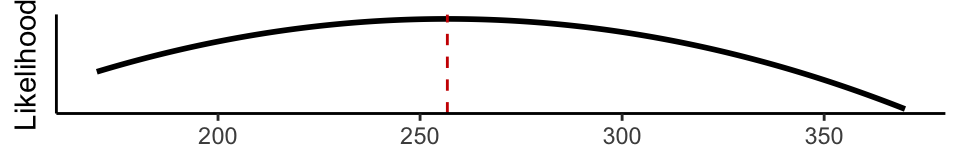
317 270 240 179 123 164 372 210 134 459 315 ...\(\bar X = 279.7\)
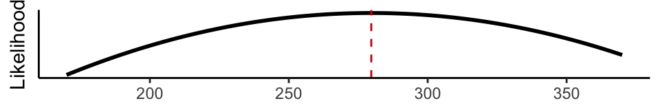
313 441 431 239 43 522 339 326 271 323 256 ...\(\bar X = 268.9\)
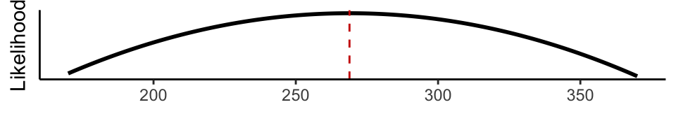
Averaging (hypothetical) likelihoods
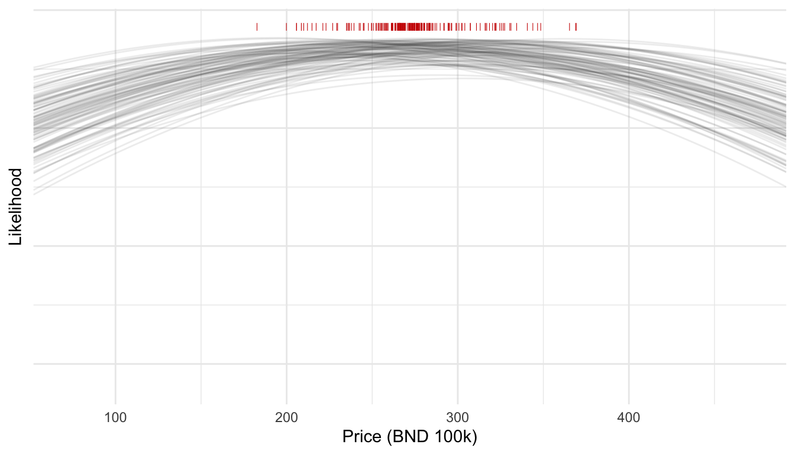
Averaging (hypothetical) likelihoods, cont.
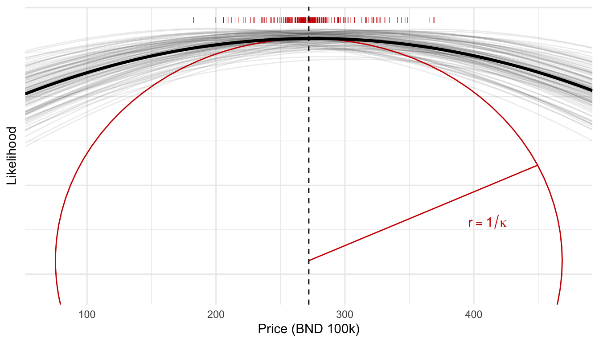
Fisher information
Definition 4 (Fisher information) Under certain regularity conditions, the Fisher information is defined as \[ \mathcal I(\theta) = -\operatorname{E}\left[\frac{d^2}{d\theta^2} \ell(\theta)\right]. \]
Evidently the Fisher information is proportional to the curvature of the (log)-likelihood function.
ü߆ INTUITION: Stronger curvature → Easier to find optima → More information about the parameter → Less uncertainty (and vice versa)
Extension of the concepts of “curvature” to the case of random outcomes!
Example (Normal mean Fisher information)
For the normal mean example, we have \(\ell'(\mu) = \frac{1}{\sigma^2}\sum_{i=1}^n (X_i-\mu)\). Thus,
\[ \begin{aligned} \ell''(\mu) = \frac{d^2\ell}{d\mu^2}(\mu) &= \frac{d}{d\mu} \left[ \frac{1}{\sigma^2}\sum_{i=1}^n (X_i-\mu) \right] \\ &= \frac{1}{\sigma^2} \sum_{i=1}^n (-1) = -n/\sigma^2. \end{aligned} \] Therefore, the Fisher information is \[ \mathcal I(\mu) = -\operatorname{E}\left[\ell''(\mu)\right] = \frac{n}{\sigma^2}. \] We can improve the estimate of \(\mu\) by increasing the sample size \(n\)!
Large information (\(n=1000\))
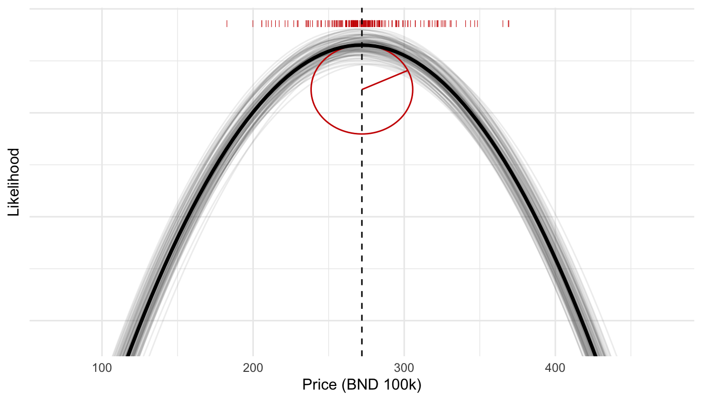
Another example
Exponential waiting time
Example 3 (Estimating failure rate of a machine component) Suppose we collect data on how long (in hours) a machine component lasts before it fails. This could be a valve in a chemical plant, a sensor in a civil engineering structure, or a server part in a data centre.
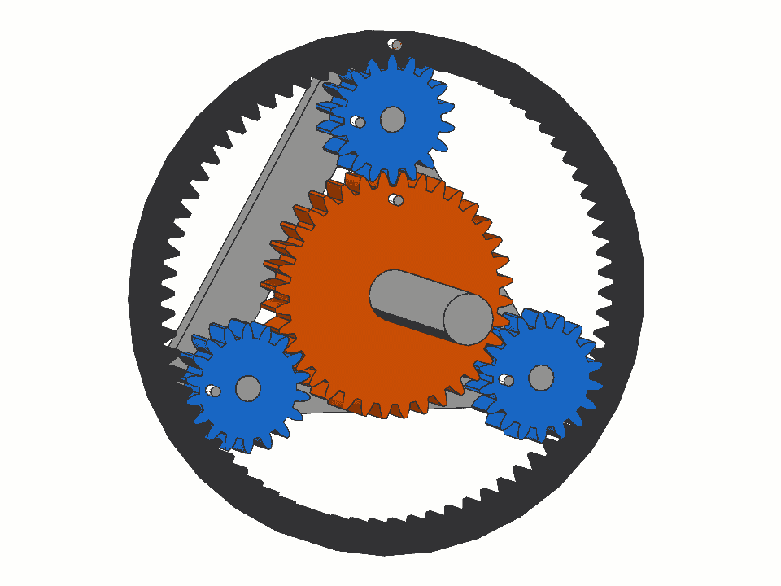
Assume that failure times \(X\) follow an exponential distribution: \[ f(x \mid \lambda) = \lambda e^{-\lambda x}, \quad x > 0 \] where \(\lambda\) is the failure rate. Using observed failure times from a sample of machines, we can estimate \(\lambda\) via Maximum Likelihood Estimation (MLE).
Engineers and analysts can predict average lifetime (\(1/\lambda\)), schedule maintenance, and make design decisions to improve reliability.
Exponential waiting time (cont.)
Let \(X_1,\dots,X_n\) be the observed failure times. The log-likelihood function is given by
\[ \begin{aligned} \ell(\lambda) = \log \left[ \prod_{i=1}^n f(X_i \mid \lambda) \right] &= \sum_{i=1}^n \log f(X_i \mid \lambda) \\ &= \sum_{i=1}^n \log \left( \lambda e^{-\lambda X_i} \right) \\ &= n \log \lambda - \lambda \sum_{i=1}^n X_i. \end{aligned} \]
Exponential waiting time (cont.)
To find the MLE of \(\lambda\), we differentiate the log-likelihood function with respect to \(\lambda\) and set it to zero:
\[ \begin{aligned} \frac{d}{d\lambda} \ell(\lambda) &= \frac{n}{\lambda} - \sum_{i=1}^n X_i = 0 \\ \Leftrightarrow \lambda &= \frac{n}{\sum_{i=1}^n X_i} = \frac{1}{\bar X}. \end{aligned} \]
Tip
To obtain the Fisher information, just differentiate \(\ell'(\lambda)\) once more, and take negative expectations. Verify that it is \(\mathcal I(\lambda) = n/\lambda^2\).
Data example
Suppose \(n=50\) machines were observed, and the failure times (in hours) recorded:
293.4 339.4 392.6 84.4 36.9 792.5 88.8 844.1 182.6 103.7
364.5 73.7 578.6 101.9 143.9 459.4 200.2 206.0 461.5 301.2
199.6 218.0 76.5 89.8 324.3 240.5 2022.2 264.8 213.8 901.3
219.9 729.4 1322.9 551.3 571.2 428.1 781.1 395.7 18.2 50.9
322.6 110.6 157.4 310.5 477.7 168.4 9.2 969.1 399.5 5.4 Since the MLE of \(\lambda\) is \(\hat\lambda = 1/\bar X\), we can compute it as follows: \[ \hat\lambda = \frac{1}{\bar X} = \frac{1}{372.0} \approx 2.69e-03. \] In other words, approximately one failure every 372 hours.
Plot of data and exponential fit
Conclusions
Summary
Given a model, probability allows us to predict data. Statistics on the other hand, allows us to learn from data.
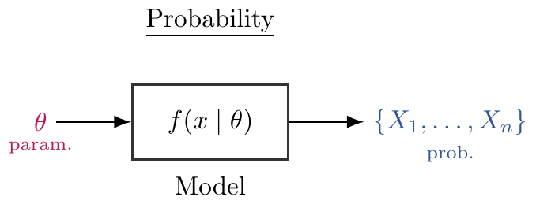
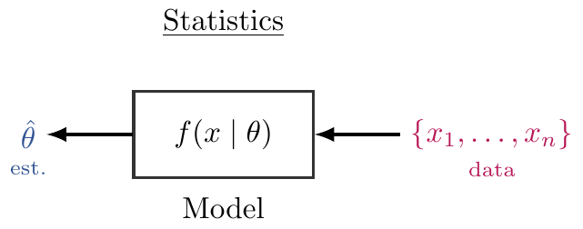
- Parameter estimation is a central task in statistics.
- Finding the Maximum Likelihood Estimator (MLE)
- Understanding Fisher Information and curvature
- Uncovering role of sample size in estimation uncertainty
- Calculus is not just background maths—it’s the engine driving statistical theory.
Where to go from here
üåê Numerical derivatives ‚Äî how computers approximate calculus
üöÄ Modern statistics tackles:
- Big data (too much)
- High-dimensional data (too many variables)
- Complex models (real-world messiness)
ü߆ Bimodal and non-standard distributions when simple models break
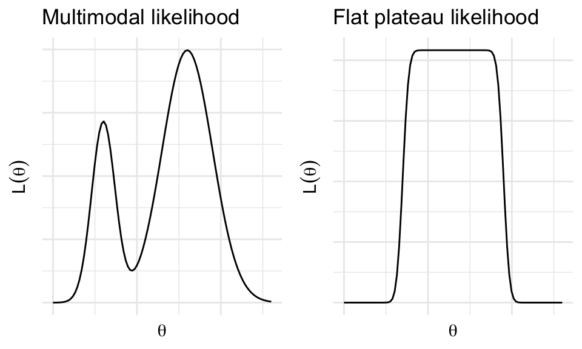
Thanks!